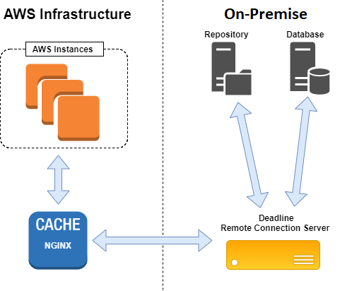

AWS Portal NGINX Cache¶
The NGINX cache is created automatically by the AWS Portal and resides on AWS infrastructure. This allows cached data to be available to cloud render nodes without having to communicate over the internet.
The NGINX cache is currently intended to only cache file resources, such as plugin scripts or job assets that are submitted to the repository. This is because these types of resources are often the most expensive in terms of the amount of data that would need to be transferred and the time it takes to transfer them (over the internet). By caching them, they only need to be transferred to AWS infrastructure a single time; from there they can be accessed through the cache in significantly less time (less expensively).
Note
If job assets are not submitted to the repository when the job is submitted, they will not be cached. These types of submissions use a different process for retrieving job assets. Plugin scripts and similar files are always cached.
Note
The point of this information is to provide you with knowledge for setting up your own caching system. The AWS infrastructure that Deadline launches already incorporates this cache, and does not require any additional procedure.
Configuration¶
The NGINX configuration used by the AWS Portal infrastructure looks like this:
upstream backend {
server 10.128.2.4:8889;
keepalive 256;
}
proxy_cache_path /var/cache/nginx levels=1:2 keys_zone=cache:10m max_size=16g;
proxy_cache_key $proxy_host$request_uri$http_position$http_chunk;
error_log /var/log/nginx/error.log warn;
log_format cform '$remote_addr - $upstream_cache_status [$time_local] "$request" $status $body_bytes_sent "$http_referer" "$http_user_agent"';
access_log /var/log/nginx/access.log cform;
server {
listen 8888;
server_name localhost;
keepalive_timeout 30s;
location / {
proxy_pass http://backend;
proxy_redirect off;
proxy_http_version 1.1;
proxy_set_header Connection "";
}
location /fs/ {
proxy_pass http://backend;
proxy_redirect off;
proxy_http_version 1.1;
proxy_set_header Connection "";
# Cache specifications.
proxy_cache cache;
proxy_cache_lock on;
proxy_cache_lock_timeout 1h;
proxy_cache_lock_age 1h;
proxy_cache_valid 200 1h;
}
}
Warning
The above NGINX cache configuration forwards requests using the HTTP protocol, which is not secure. The AWS Portal achieves secure communication by using an SSH tunnel that is setup through the AWS Portal Link service.
Customization¶
If you want to use a similar solution for your own purposes, the above configuration likely won’t be a copy-and-paste solution. There are some details that may differ for your own setup, namely the listen 8888 and server 10.128.2.4:8889 directives.
- listen 8888
This specifies the port that the NGINX cache server is listening on. Render nodes should be connected directly to the NGINX cache on this port. For example, if the IP address of the NGINX cache is
192.168.1.150, render nodes need to have a Remote connection to192.168.1.150:8888.- server 10.128.2.4:8889
This directive specifies how we are going to communicate with the backend Remote Connection Server. In this example, the NGINX cache will forward a request that misses the cache to
10.128.2.4:8889. The backend Remote Connection Server’s IP address would be10.128.2.4and it should listen on port8889. The default listening port for the RCS is8080.- max_size=16g
This is an option of the
proxy_cache_pathdirective, but is worth mentioning here. This option specifies the maximum size of the cache on disk. The current value16gindicates that the size limit should be 16 gigabytes. If the cache becomes full, the least recently used cache resources will be deleted to make room for new cached resources. More information can be found in the NGINX documentation here:https://nginx.org/en/docs/http/ngx_http_proxy_module.html#proxy_cache_path